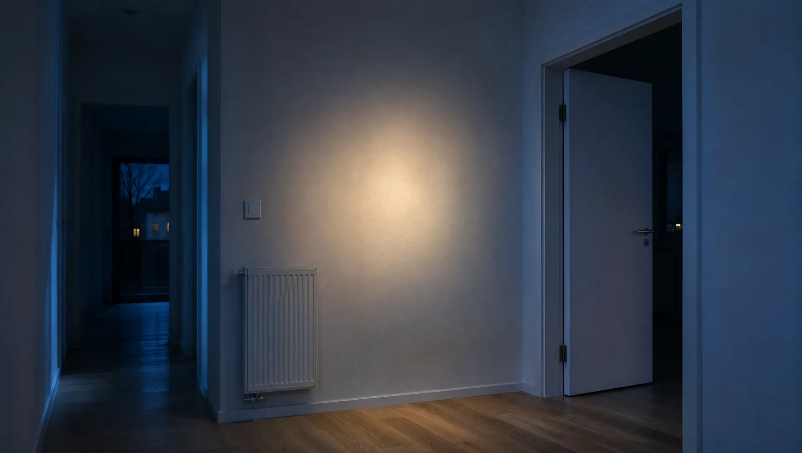
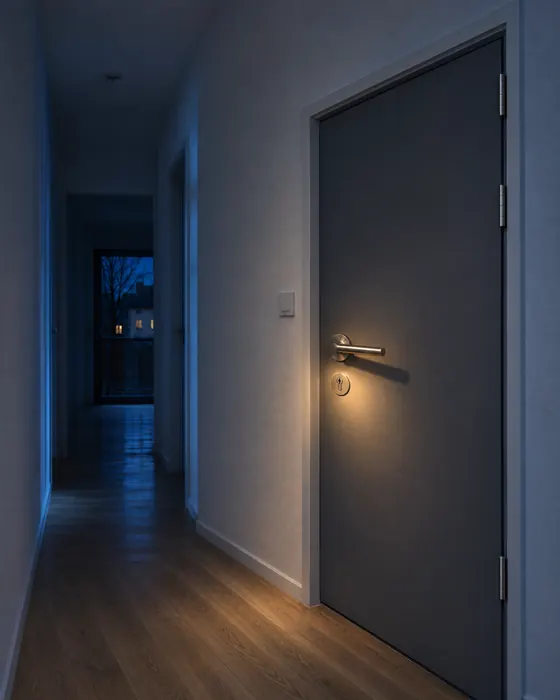
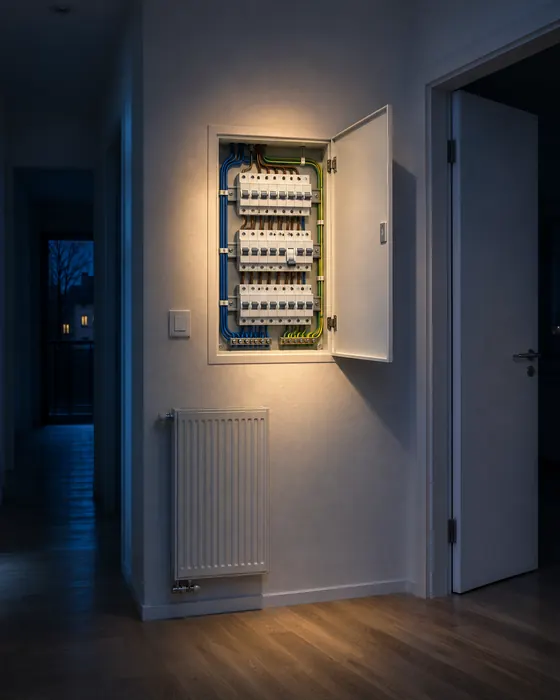
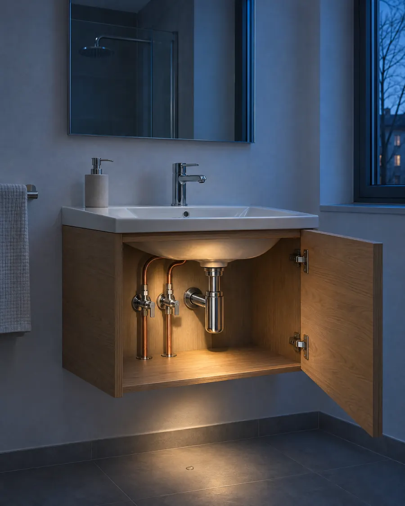
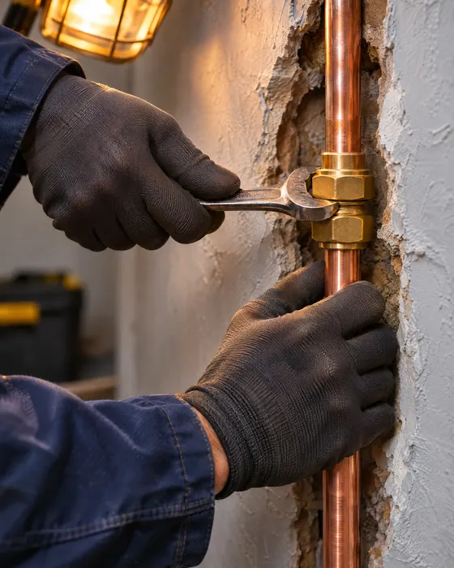

Ce qui lâche derrière vos murs, on le trouve.
Plomberie, chauffage, serrurerie, électricité dans le sud et le centre du Luxembourg. Promenez la lampe sur le mur ou dites-nous ce qui se passe : on vous dit quoi faire en attendant.
Où est le problème ?

On décroche de 7 h à 22 h, 7 jours sur 7
Prix du déplacement annoncé au téléphone
Devis écrit avant tout travaux
Quatre métiers, un seul numéro.
Le dépannage le jour même, et les vrais travaux quand ça peut attendre. Un artisan qui connaît l'eau, la chaleur, le courant et les serrures sait aussi ce qui se passe quand l'un touche l'autre.
- Eau Plomberie Fuites et dégâts des eaux · WC, évier, douche bouchés · chauffe-eau · salle de bain complète
-
Chaleur
Chauffage
Chaudière en panne · entretien annuel · radiateurs froids, purge · pompe à chaleur

-
Serrure
Serrurerie
Porte claquée · clé perdue ou cassée · changement de cylindre · porte blindée

-
Courant
Électricité
Panne, disjoncteur qui saute · tableau électrique · prises et éclairage · mise en conformité

Vous savez le prix avant, pas après.
- Vous appelez
Ou vous envoyez une photo depuis le formulaire. On comprend le problème avant de prendre la route.
- On annonce le prix
Le déplacement et le diagnostic sont annoncés au téléphone. Vous dites oui, on part.
- On arrive avec la bonne pièce
La camionnette est rangée pour réparer sur place : cuivre, raccords, cylindres, disjoncteurs.
- Un devis écrit pour la suite
Les travaux en plus font l'objet d'un devis écrit et gratuit. Facture détaillée, photos pour l'assurance.
Avant, après.
Glissez la barre pour comparer. Sur votre site, ce sont vos chantiers : le meilleur argument d'un artisan.


On vient chez vous ?
Pas urgent ? Un devis en deux minutes.
Trois questions et une photo, réponse dans la journée. Les photos ne quittent votre téléphone qu'à l'envoi.

Infos pratiques
Horaires
Dépannage 7 jours sur 7, de 7 h à 22 h.
Travaux sur rendez-vous, du lundi au vendredi.
Zone
Sud et centre du Luxembourg. Au-delà, on vous le dit au téléphone, sans détour.